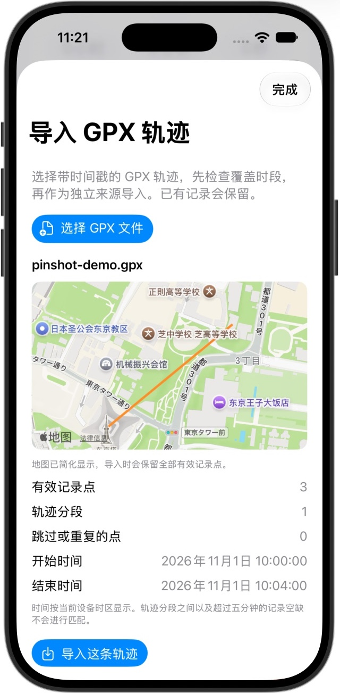

已有轨迹，也能继续派上用场
把走过的路，
带回你的照片里。
已经有一份记录行程的 GPX？把它导入 PinShot，检查覆盖时段，再为当时拍下的照片补上地点。
需要 PinShot 1.3+ · 支持 iPhone、iPad 和 Mac · 必须有对应时段的带时间戳轨迹。

先拿一小段行程，走完这四步。
准备少量支持格式的照片，以及拍摄时对应的轨迹。正式标记前，可以先预览时间匹配。
- 01
带上已有 GPX
从原记录工具导出实际行程，并保留副本。PinShot 支持 GPX 1.0/1.1 中带有效时间戳的轨迹点；没有记录时间的规划路线不能用于照片定位。
- 02
看清楚，再导入
打开“设置或标记 → 导入 GPX 轨迹”。检查地图、时间范围、记录点和跳过项目，再确认导入。它会成为独立来源，保留已有记录。
- 03
对准相机时间
先预览轨迹覆盖内的一个拍摄时间，核对相机时钟与时区。时间校准助手只改变匹配偏移，不会改写照片的拍摄日期。
- 04
先标几张，检查结果
选择对应时段的几张照片完成标记，检查位置和影像是否正常，再扩大处理范围。iOS 会保留原片；先确认带 GPS 的副本，再手动清理原片。
查看视频文字步骤
- 从已有的 GPX 轨迹开始
照片需要对应拍摄时段的记录轨迹。本次演示使用明确标记的合成示例图片与 GPX。 - 导入前，先检查轨迹
查看地图、记录时间与覆盖范围。没有时间戳的规划路线，不能用于照片定位。 - 先预览匹配的位置
本例设备时区为 UTC+8：10:01 即 02:01 UTC。预览只检查匹配，不修改照片。 - 示例照片已选好
手动选择后，1 个项目待添加 GPS。先确认照片与轨迹时段对应，再执行标记。 - 为照片补上 GPS 位置
结果显示成功 1 项，失败、跳过与未匹配均为 0。原片和带 GPS 的副本均保留。 - 在系统“照片”中检查位置
查看带 GPS 副本在地图上的位置。原片仍保留，请先核对副本，再决定是否清理原片。
PINSHOT · GPX
用自己的照片前，先看一次完整步骤。
使用 PinShot 真实界面剪辑的分步演示。轨迹与图片是人工构造的测试数据，不代表用户的真实照片或行程。
跟着同一个小示例试一遍
示例包里有带标记的 JPEG、含三个记录点的 GPX，以及中英文说明。GPX 导入和时间匹配预览免费；免费版每月可标记 20 个影像项目。
下载 GPX 与示例图片 ↓示例轨迹只用于包内图片。测试时将相机时间偏移设为 0，完成后恢复原设置。图片的原始 EXIF 时间为 2026 年 11 月 1 日 02:01 UTC，设备可能按本地时区显示。
能带来什么，也先了解边界。
| 你现有的内容 | 在 PinShot 中怎么用 |
|---|---|
| 带时间戳的已记录 GPX | 作为独立来源导入，预览拍摄时间的匹配位置；重复导入完全相同的文件会复用原来源。 |
| 记录期间拍摄的照片 | 为支持的 JPEG、HEIC/HEIF、PNG、TIFF 和 DNG 补写 GPS；也支持系统图库中的实况照片和受支持的视频。 |
| 没有记录时间的规划路线 | 无法确定某张照片拍摄时的地点。PinShot 不会仅凭画面推测缺失的原始位置。 |
| CR2、CR3、NEF、ARW、RAF、RW2 | 这些相机专有 RAW 不会被直接修改。请保留原始文件，使用支持的影像流程。 |
| 其他应用的账号与订阅 | 不会转移。这里导入的是 GPX 文件，不是账号、购买记录或整套云端照片。 |
导入轨迹只在有效记录分段内匹配；分段间和超过五分钟的记录空缺不会匹配。时间重叠或冲突的轨迹会被拒绝。单次上限：20 MB、20 万个点、1 万个分段。
导入 GPX 必须购买 Pro 吗？
不需要。GPX 导入与只读时间匹配预览免费，免费版每月可标记 20 个影像项目。Pro 提供不限量标记、完整与自定义日期扫描、Mac 文件夹标记、轨迹导出及可选的个人 iCloud 日志同步。
所有工具导出的 GPX 都能用吗？
不承诺普遍兼容。文件必须包含有有效时间戳的记录轨迹点。请先导入一小段行程，查看跳过点与记录空缺，再核验几张照片的位置。
Mac 能替我随身记录轨迹吗？
Mac 负责导入、同步与整理，不充当移动 GPS 记录器。拍摄前请使用 iPhone 上的 PinShot 或其他记录工具。
位置不对，或文件写入失败怎么办？
先核对轨迹来源、原始拍摄时间、时区与相机偏移，并保留原片备份。跳过或失败不代表已经标记成功。初次反馈可以先提供 App 版本、文件格式和错误提示，无需直接发送私人照片或精确行程。
从一条轨迹开始，
让一张照片找到地点。
免费体验。Pro 提供永久买断、月度和年度订阅；价格与优惠资格以 App Store 显示为准。
PinShot 为独立开发的产品，与 Geotag Photos Pro 或 TappyTaps 无从属关系。相关产品名称归各自所有者所有。